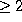

Next: The jet of derivatives
Up: The Output Routines
Previous: The Output Routines
Its prototype is:
int taylor_step_ODE_NAME(MY_FLOAT *time,
MY_FLOAT *xvars,
int direction,
int step_ctrl_method,
double log10abserr,
double log10relerr,
MY_FLOAT *endtime,
MY_FLOAT *stepused,
int *order);
The function taylor_step_ODE_NAME does one step of numerical
integration of the given system of ODEs, using the control parameters
passed to it. It returns 1 if endtime is reached, 0 otherwise.
{Parameters:
- time
on input: time of the initial condition
on output: new time - xvars
on input: initial condition
on output: new condition, corresponding to the (output) time ti - direction
flag to integrate forward or backwards.
-1: forward
: backwards
Note: this flag is ignored if step_ctrl_method is set to 0. - step_ctrl_method
flag for the step size control. Its possible values are:
- 0:
- no step size control, so the step and order are
provided by the user. The parameter ht is used as step, and
the parameter order (see below) is used as the order.
- 1:
- standard stepsize control. it uses an
approximation to the optimal order and to the radius of
convergence of the series to approximate the 'optimal' step
size. It tries to keep the absolute and relative errors below
the given values. See the paper for more details.
- 2:
- as 1, but adding an extra condition on the
stepsize h: the terms of the series - after being multiplied
by the suitable power of h - cannot grow.
- 3:
- user defined stepsize control. The code has to
be included in the routine
compute_timestep_user_defined (see the code). The user
must also include code for the selection of degree, in the
function compute_order_user_defined.
- log10abserr
decimal log of the absolute accuracy required. - log10relerr
decimal log of the relative accuracy required. - endtime
if NULL, it is ignored. if step_ctrl_method is set to
0, it is also ignored. otherwise, if next step is going to be
outside endtime, reduce the step size so that the new time
time is exactly endtime (in that case, the function
returns 1). - ht
on input: ignored/used as a time step (see parameter
step_ctl_method)
on output: time step used - order
- input: this parameter is only used if step_ctrl_method
is 0, or if you add the proper code for the case
step_ctrl_method=3.
If step_ctrl_method is 0, its possible values are:
;SPMlt;2: the program will select degree 2,
 : the program will use this degree.
- output: degree used.
Returned value:
- 0: ok.
- 1: ok, and time=endtime.
Next: The jet of derivatives
Up: The Output Routines
Previous: The Output Routines
Maorong Zou
Tue Nov 13 09:42:48 CST 2001